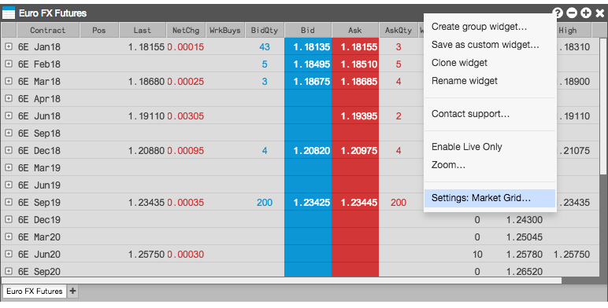

All widgets have a context menu, similar to the following, that can be accessed by right-clicking in any widget's titlebar. A similar context menu is also available from within the widget.

This context menu contains common actions for widgets, as well as some actions specific to a particular widget, such as Enable Live Only in this example. Depending on the selected widget, the context menu will contain a subset of the following common menu items:
Create group widget: Combines multiple widgets into a single widget group.
Save as Custom widget: Saves a widget group as a custom widget that is added to the Widgets menu.
Clone widget: Opens a duplicate copy of the selected widget.
Send to: Moves the widget to another workspace window (shown only when the workspace has more than one window).
Contact support: Opens a Feedback widget for contacting TT Customer Support.
Zoom: Zooms the view of the selected widget.
Settings: WidgetName: Opens a Settings dialog to let you customize the internal settings of the selected widget or to define new defaults for all widgets of the same type.
Note: Some widgets, such as MD Trader, support additional context menus for different areas within the widget.